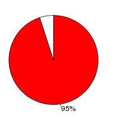

Chicken (Gallus gallus, WASHUC2) and Turkey (Meleagris gallopavo, UMD2) were aligned using the LastZ alignment algorithm (LastZ) in Ensembl release 61. Chicken was used as the reference species. After running LastZ , the raw LastZ alignment blocks are chained according to their location in both genomes. During the final netting process, the best sub-chain is chosen in each region on the reference species.
Full list of pairwise alignments| Gap open penalty (O) | 400 |
| Gap extend penalty (E) | 30 |
| HSP threshold (K) | 3000 |
| Threshold for gapped extension (L) | 3000 |
| Threshold for alignments between gapped alignment blocks (H) | 2200 |
| Masking count (M) | 50 |
| Seed and Transition value (T) | 1 |
| Scoring matrix (Q) | Default |
Number of alignment blocks: 455970
| Genome coverage(bp) | Coding exon coverage (bp) | |
|---|---|---|
| Chicken |
|
 |
| 942,910,163 out of 1,100,480,441 | 23,466,332 out of 24,644,731 | |
| Turkey |
|
|
| 875,520,119 out of 1,061,982,190 | 21,944,292 out of 22,787,503 |